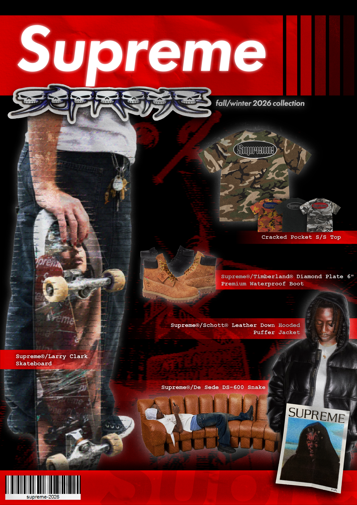
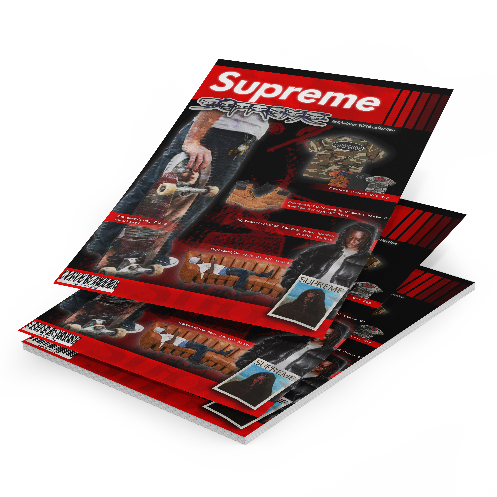

Poster Supreme
Projet personnel
Photoshop, Illustrator
2026
Ce projet est une affiche promotionnelle imaginée pour la collection automne/hiver 2026 de Supreme. L'objectif était de réinterpréter les codes visuels de la marque tout en affirmant ma propre identité graphique.
Inspirée des catalogues streetwear et fanzines de skate des années 2000 (esthétique Y2K), la composition repose sur un assemblage brut des pièces phares, enrichi d'une texture papier froissé et d'effets vintage (ombres portées, lueurs, grain).
Côté couleurs, le rouge emblématique de Supreme habille les éléments clés et tranche sur un fond noir pour faire ressortir les produits. Pour la typographie, j'ai repris l'identité historique de la marque : la Futura (celle du logo) pour le titre et la Courier New (utilisée sur leur site) pour le nom des pièces.